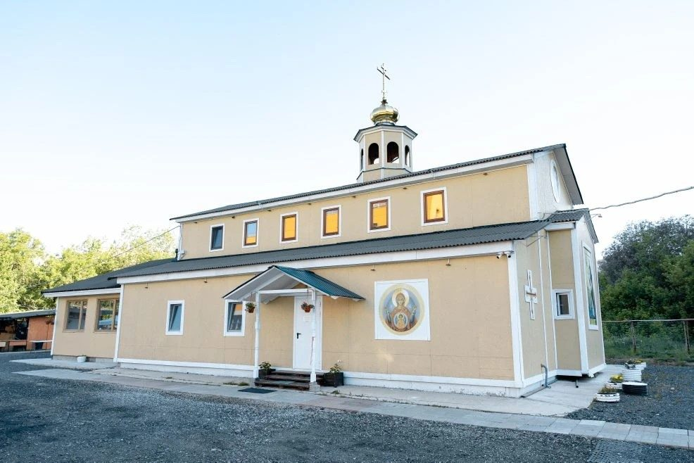

Её работа реально освобождает время для настоящей живой деятельности — общения с людьми и молитвы.
Отзыв целиком
Хочу поблагодарить Алёну за её деятельность и сказать, что в настоящее время, и особенно для храмов, это большая помощь.
Приходская жизнь очень разнообразная, и приходится быстро решать какие-то вопросы. Благодаря Алёне мы стали осуществлять больше проектов в короткие сроки, получилось автоматизировать некоторые моменты: календарь, публикации в разных мессенджерах. Её работа реально освобождает время для настоящей живой деятельности — общения с людьми и молитвы. Алёна воцерковлённый человек и понимает «кухню» изнутри. И это тоже экономит время. Также хочется сказать о быстрой реакции на просьбы: Алёна всегда на связи и готова помочь.
Приход святых равноапостольных Кирилла и Мефодия в Дегунине г. Москвы очень благодарит Алёну за труды.